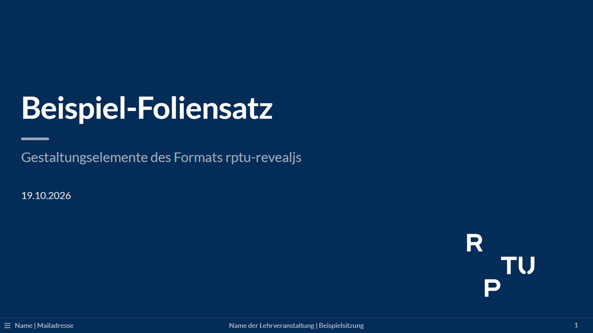

Erster Foliensatz
Von der Beispieldatei zum eigenen Vortrag mit Handout
Voraussetzung: ein Projekt aus der Vorlage (siehe Installation). Die Beispiele heißen hier statistik-ws26.
1. Beispiel rendern und ansehen
Die Beispieldatei statistik-ws26.qmd in RStudio öffnen und auf Render klicken. Oder im Terminal:
quarto render statistik-ws26.qmdNach etwa einer halben Minute liegen neben der qmd-Datei zwei neue Dateien:
| Datei | Inhalt |
|---|---|
statistik-ws26.html |
der Vortrag, zum Präsentieren im Browser öffnen |
statistik-ws26.pdf |
das Handout, z. B. zum Hochladen in die Lernplattform |
Tasten beim Präsentieren:
| Taste | Wirkung |
|---|---|
| Pfeiltasten, Leertaste | blättern |
F |
Vollbild |
S |
Referentenansicht mit Sprechernotizen und nächster Folie |
Esc |
Übersicht aller Folien |
B |
Bildschirm schwarz, erneut B zurück |
M |
Folienmenü (auch über den Knopf unten links) |
Die Beispieldatei zeigt alle Gestaltungselemente; sie eignet sich zum Nachschlagen und Abschreiben. Dieselben Folien gibt es in der Demo.
Fehlt das Handout oder ist es nicht aktuell, hilft Probleme und FAQ weiter. Ein geöffnetes PDF kann Windows nicht überschreiben.
2. Eigene Datei anlegen
Am einfachsten die Beispieldatei kopieren und alles nach dem Kopf löschen. Für mehrere Sitzungen bietet sich ein Ordner pro Sitzung an:
statistik-ws26/
├── _quarto.yml
├── _resources/
├── 01_einfuehrung/
│ └── 01_folien.qmd
└── 02_deskriptiv/
└── 02_folien.qmdPfade in einer qmd-Datei gelten relativ zu dieser Datei. Aus einem Unterordner heißt es also ../_resources/… statt _resources/…, z. B. beim Semesterplan und bei rptu.R.
Dateinamen nicht mit _ beginnen: Solche Dateien und Ordner rendert Quarto nicht.
quarto render ohne Dateinamen rendert auch die Beispieldatei mit. Wer sie zum Nachschlagen behalten möchte, kann sie trotzdem liegen lassen; sonst löschen.
3. Kopf und Titelfolie
Jeder Foliensatz beginnt mit einem Kopf zwischen zwei Zeilen ---. Darin stehen Einträge der Form name: wert (im Format YAML):
---
title: "Einführung"
subtitle: "Organisatorisches und erste Schritte in R"
date: 2026-10-22
format:
rptu-revealjs:
footer: "Statistik I | Sitzung 1"
---title,subtitle,dateund optionalauthorerscheinen auf der Titelfolie. Das Datum im Format JJJJ-MM-TT eintragen; angezeigt wird es so, wiedate-formatin der_quarto.ymles festlegt (Vorlage: 22.10.2026).date: todaysetzt das Datum des Renderns.footer:steht in der Mitte der Fußzeile. Links steht der Kontakt aus der_quarto.yml, rechts die Foliennummer.format: rptu-revealjsmuss im Kopf jedes Foliensatzes stehen. Nur daran erkennt das Skript für das Handout, welche Dateien Foliensätze sind.

Der Kontakt aus der _quarto.yml gilt für alle Foliensätze des Projekts. Steht kontakt: im Kopf einer Datei, gilt dort dieser Wert; kontakt: "" lässt die Stelle leer.
4. Setup-Chunk
Direkt nach dem Kopf folgt ein R-Chunk, also ein Codeblock, den R beim Rendern ausführt. Er lädt Pakete und Daten, ohne etwas anzuzeigen:
```{r}
#| include: false
source("../_resources/R/rptu.R") # optional: Grafiken im Folien-Design (Pfad aus einem Unterordner)
# Pakete laden und Daten einlesen, z. B.:
# library(dplyr)
# daten <- read.csv("../_resources/daten/umfrage.csv")
```Zwischen Kopf und erster Folienüberschrift nur den Setup-Chunk setzen. Alles andere, auch ein HTML-Kommentar, ergibt eine leere Folie.
5. Folien schreiben
Ein Foliensatz besteht aus Überschriften und Inhalt. Ausdrücke wie {.agenda} heißen Klassen: Sie stehen in geschweiften Klammern hinter einer Überschrift oder einem Stück Text ([Text]{.rot}) oder direkt nach ::: an einem Block (::: kasten) und bestimmen, wie er aussieht.
## Heutige Themen {.agenda}
### Organisatorisches
### Erste Schritte in R
# Organisatorisches
Termine, Ablauf und Prüfung
## Ablauf der Sitzungen
### Theorie
- Inhalte wiederholen und vertiefen
. . .
### Praxis
- Verfahren in R anwenden
```{r}
summary(mtcars$mpg)
```| Zeile | Wirkung |
|---|---|
# Titel |
Abschnittsfolie mit großer Nummer (01, 02, …); Text direkt darunter wird zum grauen Untertitel |
## Titel |
neue Folie |
### Titel |
fette Zwischenüberschrift auf der Folie |
{.agenda} |
nummeriert die ###-Überschriften der Folie |
. . . |
Pause: Alles danach erscheint erst beim nächsten Klick (im Handout sofort) |
| R-Chunk | Code und Output erscheinen auf der Folie |
Wie die Folien aussehen und was es sonst noch gibt (Spalten, Kästen, Farben, Symbole), zeigt Folien gestalten.
6. Rendern
In RStudio mit Render oder im Terminal:
quarto render 01_einfuehrung/01_folien.qmdquarto render ohne Dateinamen rendert alle Foliensätze des Projekts. Auch der Render-Knopf in RStudio erzeugt Vortrag und Handout; ist dort „Render on Save“ eingeschaltet, geschieht das nach jedem Speichern.
Schneller ohne Handout
Mit Handout dauert jedes Rendern etwa doppelt so lange, denn der Foliensatz wird ein zweites Mal gerendert und dann gedruckt. Beim Arbeiten an den Folien reicht oft der Vortrag. Dafür gibt es eine Umgebungsvariable, also eine Einstellung, die für alle Programme gilt, die aus diesem Terminal bzw. dieser R-Sitzung starten: Ist RPTU_NO_HANDOUT auf 1 gesetzt, entsteht kein Handout.
# Terminal: Git Bash, macOS, Linux
RPTU_NO_HANDOUT=1 quarto render 01_einfuehrung/01_folien.qmd# Terminal: PowerShell (gilt bis zum Schließen des Terminals)
$env:RPTU_NO_HANDOUT = "1"
quarto render 01_einfuehrung/01_folien.qmd# R-Konsole, mit dem R-Paket quarto
Sys.setenv(RPTU_NO_HANDOUT = "1")
quarto::quarto_render("01_einfuehrung/01_folien.qmd")
Sys.unsetenv("RPTU_NO_HANDOUT") # danach wieder mit Handout